랜덤티켓 → 등급 전환 프로세스 스토리보드
경유 구매 적립부터 등급 공개·환수, CMS 운영 집계까지 — 실제 배포본 화면 캡처 기반
경유 구매 → 구매 금액 입력
홈 쇼핑몰 바로가기로 쿠팡에 접속(브릿지 화면)한 뒤 구매를 마치면, 데모에서는 구매 금액 입력 시트로 포스트백 수신을 시뮬레이션한다. 금액을 입력하면 Greedy 분배(골드 10만 → 실버 5만 → 브론즈 5천원 단위, 잔돈 버림)로 등급 구성이 내부 계산된다. 167,000원 = 골드 1 + 실버 1 + 브론즈 3 (총 5장).

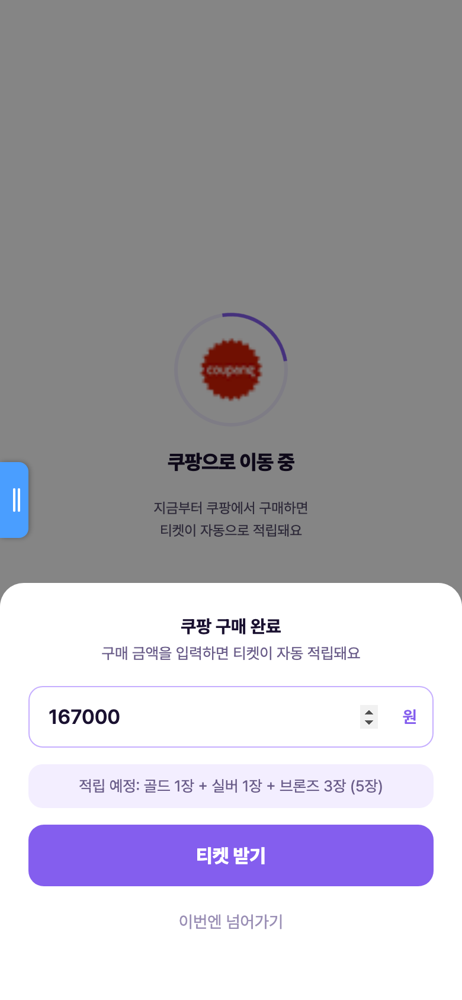
가지급(랜덤 티켓) 적립 — 등급은 내부 확정, 화면은 비공개
구매 즉시 등급 티켓 5장이 status: pending(가지급)으로 생성되고 포스트백 1건이 "대기" 상태로 기록된다. 등급은 이미 정해져 있지만 화면에는 "랜덤 티켓 5장 · 대기중"으로만 안내한다. 확정은 앱이 스스로 하지 않고 포스트백 확정 처리(운영/배치)에서만 일어난다.
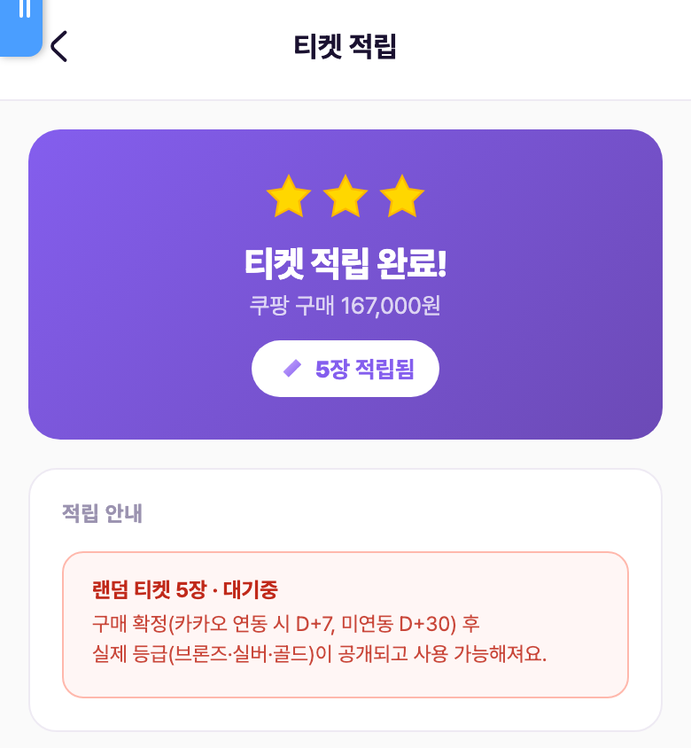
전환 대기 상태 확인 — 혜택 탭 · 내 적립 티켓
혜택 탭 "내 티켓" 카드에는 랜덤 티켓이 구매 건(묶음) 단위로 표시되고, "내 적립 티켓" 상세에서는 대기 목록에 "N일 후 전환 예정"만 노출된다(등급 구성 비공개 — 2026-07-09 확정 정책). 이 계정은 카카오 미연동 게스트라 D+30이 적용돼 "30일 후 전환 예정"으로 표시된다.
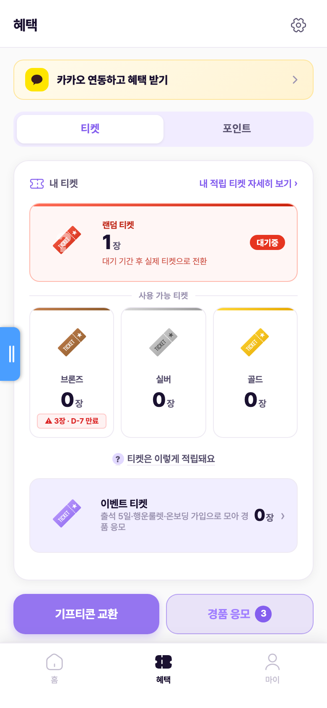
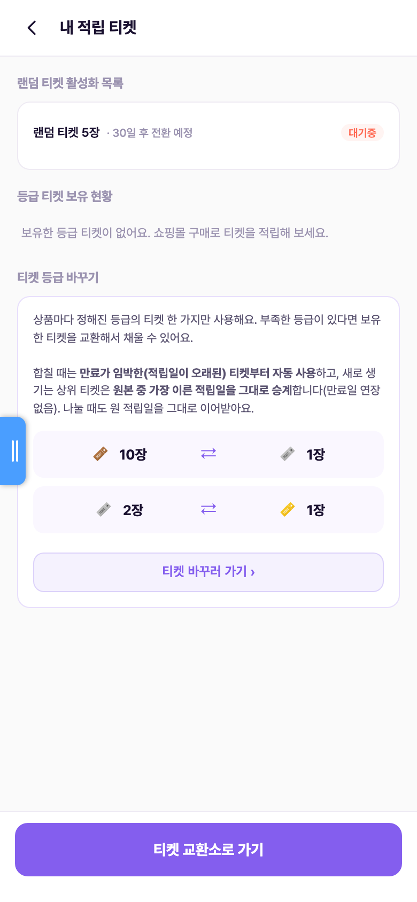
포스트백 수신 확인 — 가지급(랜덤티켓) 상태
CMS > 시스템 > 포스트백 로그에서 구매 건이 "대기" 상태로 집계된다(제휴 수수료 3% 매출 병기). 개발·데모 > 데이터 관리의 포스트백 목록에서는 같은 건이 "가지급(랜덤티켓) · 랜덤티켓 1개 (브3·실1·골1)"로 표시된다 — 운영자에게는 확정 전에도 등급 구성이 보인다.
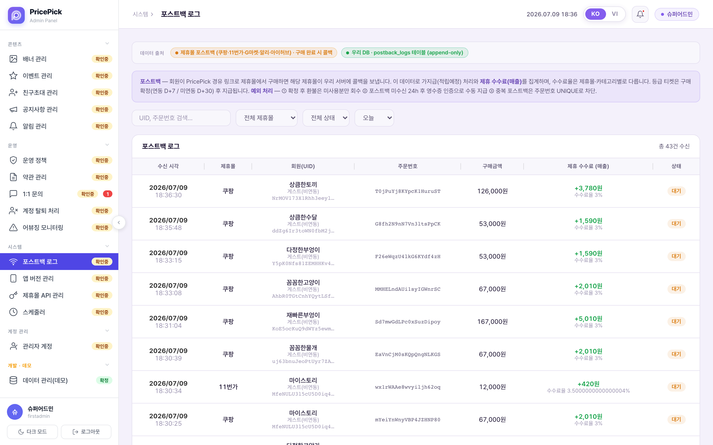
구매 확정 처리 — 가지급 → 등급 티켓 전환
포스트백 상태를 "대기 → 확정"으로 바꾸면 그 구매 건의 가지급 티켓들이 새로 발행되지 않고 상태만 pending → active로 전환된다(수량 증가 없음, 원장은 적립 시점에 1회만 기록). 정책상 이 전환은 D+7/D+30 경과 시 자동 배치가 수행해야 하며, 데모에서는 CMS 수동 처리로 시뮬레이션한다.
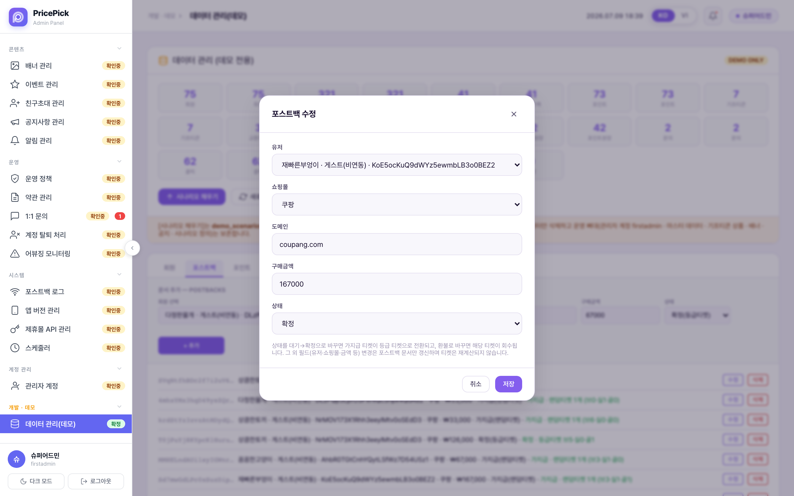
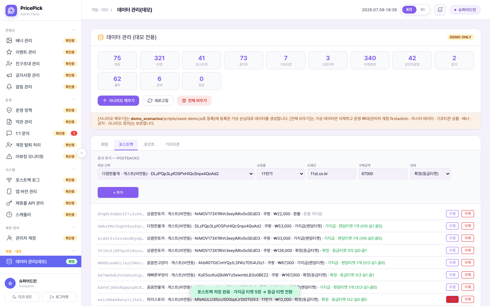
등급 공개 — 브론즈 3 · 실버 1 · 골드 1
확정 즉시 앱 전 화면에서 등급이 공개되고 사용 가능해진다. 홈 보유 티켓 카드 5장(브3·실1·골1), 혜택 탭 사용 가능 티켓, 내 적립 티켓의 등급 티켓 보유 현황이 함께 갱신된다. 대기 목록은 비워진다.
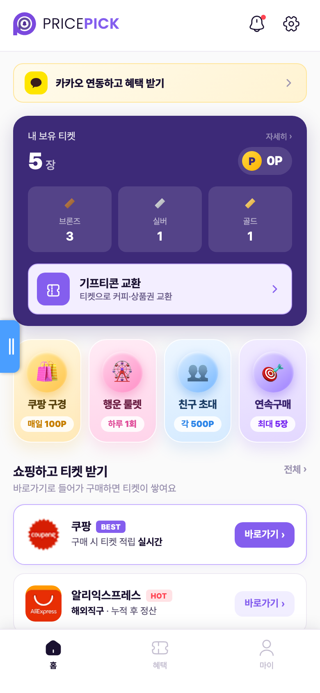
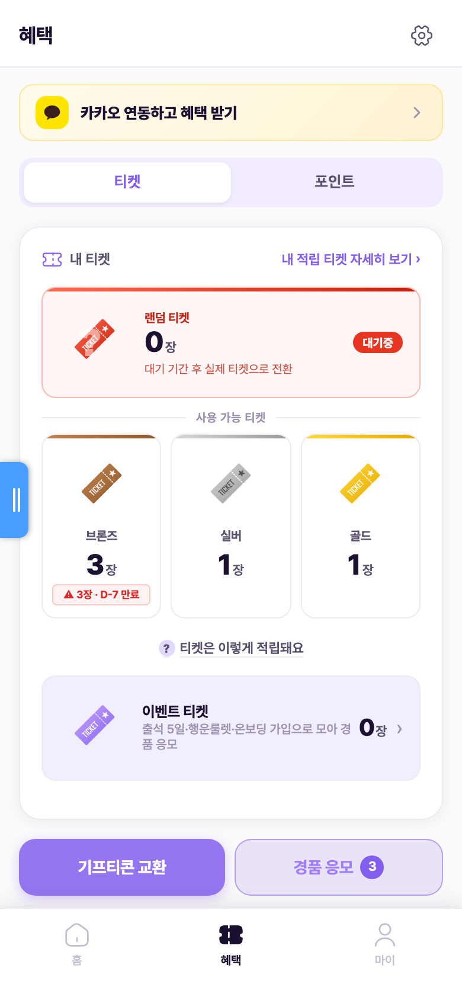
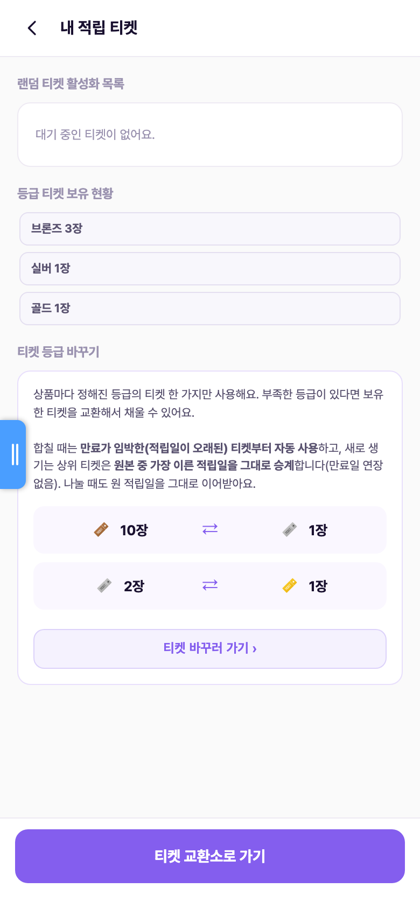
확정 전 환불 → 가지급 티켓 즉시 환수
검증을 위해 같은 계정으로 2차 구매(22,000원 = 브론즈 4장 가지급)를 만든 뒤 CMS에서 환불 처리했다. 가지급 티켓은 revoked로 전환되고 원장에는 환수(clawback) 레코드가 추가된다(원본 삭제 없음, append-only). 앱 활동내역에 "브론즈 티켓 환수 −1장 × 4"가 기록되고 잔액은 브3·실1·골1로 복귀. 확정 후 환불은 미사용분만 회수하며, 이미 쓴 티켓은 부채로 기록해 다음 적립에서 상계한다(환수 이력 > 환수 부채 추적).
포스트백 상태 "환불" 저장
목록 상태가 "환불 · 환불 처리됨"으로 바뀌고 해당 건 가지급 티켓 4장이 회수된다.
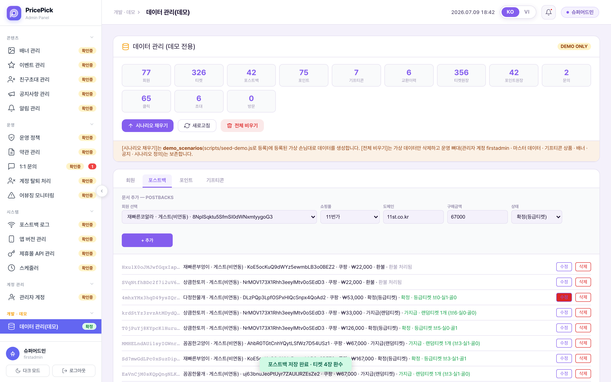
활동내역에 환수 −1장 × 4
"구매 취소·환불" 사유로 환수가 남고, 등급 티켓 잔액은 1차 구매분(브3·실1·골1)만 유지된다.
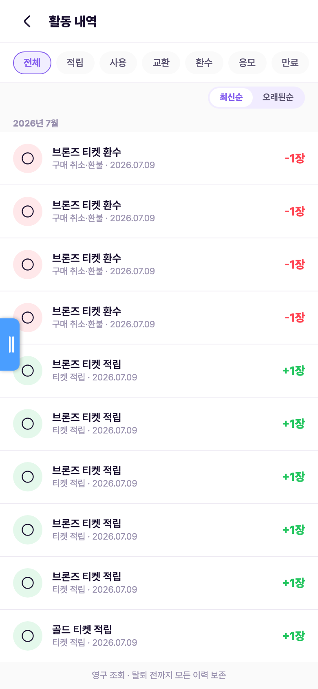
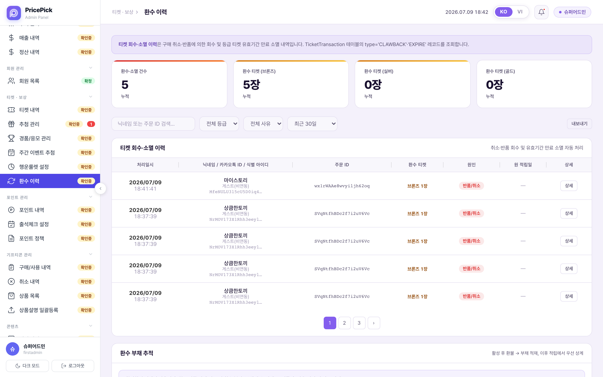
회원 단위 집계 — 랜덤 / 전환예정 / 등급 티켓
회원 목록은 계정별로 "랜덤 티켓(대기 묶음) → 전환예정(+N장) → 등급 티켓(브/실/골 3행) → 이벤트 티켓"을 한 줄에 집계한다. 회원 상세에서는 티켓 보유 현황과 함께 전환 규칙("구매 후 연동 D+7 / 미연동 D+30 확정 시 등급 티켓으로 전환, 취소 시 자동 환수")이 안내되고 수동 지급도 가능하다.
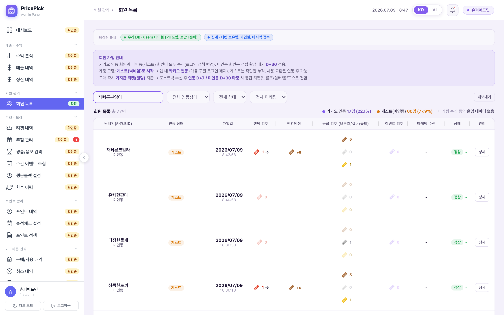
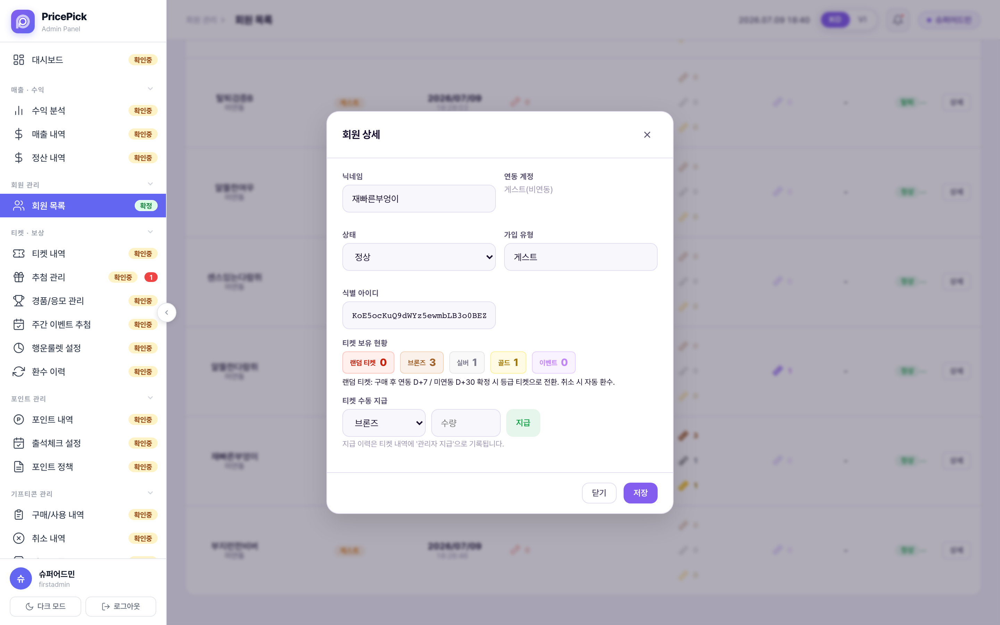
정책 · 규칙 요약 (SoT: 마스터 정책서 policyspec.html)
| 항목 | 규칙 |
|---|---|
| 적립 단위 · 보상률 | 구매액 5,000원당 브론즈 1장 · 50,000원당 실버 1장 · 100,000원당 골드 1장. 전체 보상률 2%. 큰 단위(골드)부터 채우는 Greedy 분배, 5,000원 미만 잔돈은 버림. 5천원 미만 구매는 등급 티켓 대신 이벤트 티켓 1장(일 5 / 월 30 한도). |
| 등급 확정 · 공개 | 등급은 구매 순간 내부 확정(티켓 문서에 저장, status: pending). 화면에는 확정 전까지 "랜덤 티켓"으로만 표시. 구매 확정 후 카카오 연동 D+7 / 미연동 D+30 경과 시 공개·사용 가능. 상태 흐름: 적립 예정(가지급) → 사용 가능(확정). |
| 전환 처리 주체 | 정책상 대기 기간 경과 시 자동 전환(배치). 데모는 CMS 포스트백 상태 변경(대기→확정)으로 시뮬 — 기존 티켓의 상태만 바꾸며 수량이 늘지 않는다. 원장(ticket_transactions)은 적립 시점에만 기록. |
| 만료 | 등급 티켓: 적립일(등급 확정일 아님) + 365일, D-30 · D-7 알림. 이벤트 티켓: 발급일 + 100일. 포인트: 적립일 + 1년. |
| 환불 처리 | 확정 전 환불: 가지급 보상 자동 취소(즉시 환수). 확정 후 환불: 미사용분만 회수, 이미 쓴 티켓은 회수하지 않고 부채 기록 후 다음 적립에서 상계(잔액 마이너스 금지). 이벤트 티켓은 환불해도 회수 안 함. 원장은 삭제 없이 환수 레코드 추가(append-only). |
| 어뷰징 한도 | 구매 적립 1일 5건 / 월 50건. 30일 내 환불 5건 초과 시 어뷰징 플래그(자동 회수 아님, 운영자 검토). |
| 예외 · 누락 | 포스트백 24시간 미수신 시 "주문 확인 중" → 유저 영수증 인증 → CS 확인 후 수동 지급. 같은 주문번호 중복 수신은 1건만 인정(UNIQUE 차단). |
미결 · 형님 확인 필요 (임의 수정하지 않음 — 캡처 근거 있음)
- ① 구매 금액 입력 미리보기에 등급 구성 노출. "적립 예정: 골드 1장 + 실버 1장 + 브론즈 3장"이 구매 시점에 표시됨(1단계 캡처). 혜택 탭 대기 항목의 등급 노출은 07-09에 제거됐으나 이 시트는 남아 있음 → "등급 사전 미공개" 정책과 상충. 노출 유지가 의도인지 확인 필요.
- ② 활동내역이 가지급(확정 전) 티켓도 등급명으로 즉시 기록·노출. 2차 구매 직후(확정 전) "브론즈 티켓 적립 +1장 × 4"가 활동내역에 바로 보임(캡처
11-activity-preconfirm.png— 자산 폴더 포함, 본문 미게재). 원장 기록 자체는 정책대로 적립 시점 1회지만, 화면 노출 기준을 정해야 함. - ③ 랜덤 티켓 수량 표기 단위 불일치. 혜택 탭 카드 = 구매 묶음 단위("1장"), 적립 완료·내 적립 티켓 = 등급 티켓 수("5장"), CMS = "랜덤티켓 1개 (브3·실1·골1)". 유저 화면 두 곳이 서로 다른 숫자를 보여줌 → 표기 기준 통일 필요.
- ④ 혜택 탭 브론즈 카드의 "⚠ 3장 · D-7 만료" 경고가 보유 0장일 때도 표시(3단계 캡처). 실데이터와 무관한 하드코딩으로 보임.
- ⑤ 쿠팡 적립 안내(pw-12)·혜택 탭 안내가 "구매 확정 후 7일 사용 가능"으로만 서술 — 미연동 D+30 케이스 미언급. 문구 보강 여부 확인.
- ⑥ 데모에서 확정 시 등급 티켓
expires_at이 설정되지 않음(코드 확인). 정책은 적립일+365일 — 데모 허용 범위인지, 개발 스펙에 명시할지 확인. - ⑦ CMS 회원 목록 닉네임 검색이 필터를 적용하지 않는 것으로 보임(검색어 입력 후에도 전체 목록 유지). 깡통 UI 의심 — 확인 필요.
- ⑧ 자동 전환 배치 부재. 정책상 D+7/D+30 자동 전환이지만 데모는 CMS 수동 확정뿐이고 대시보드에 "배치 스케줄러 미가동" 표기. 실서비스 개발 요건(스케줄러)으로 명시 필요.